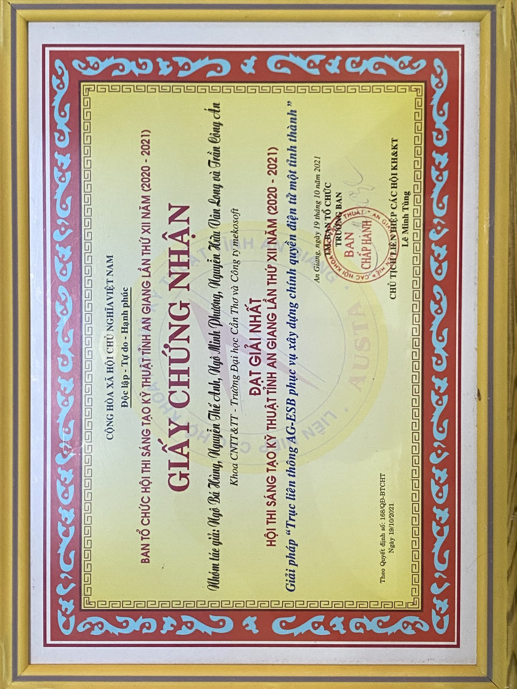
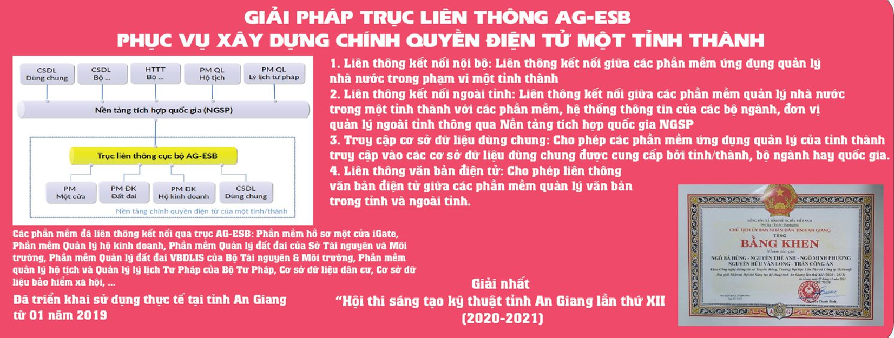
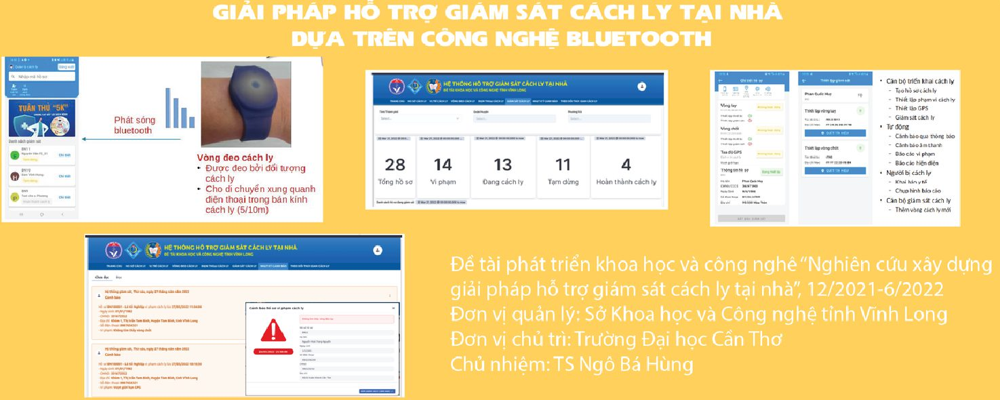
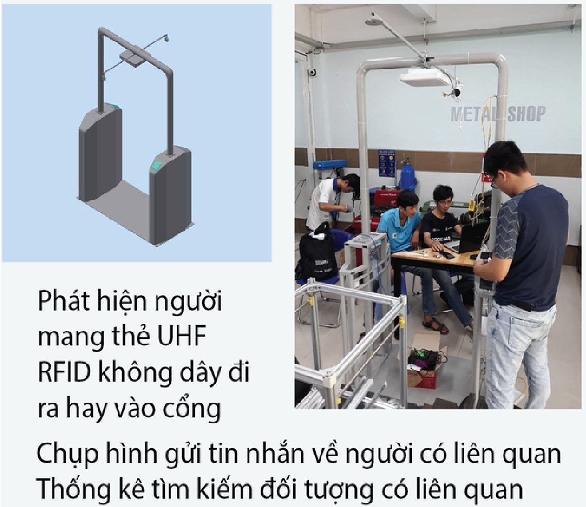
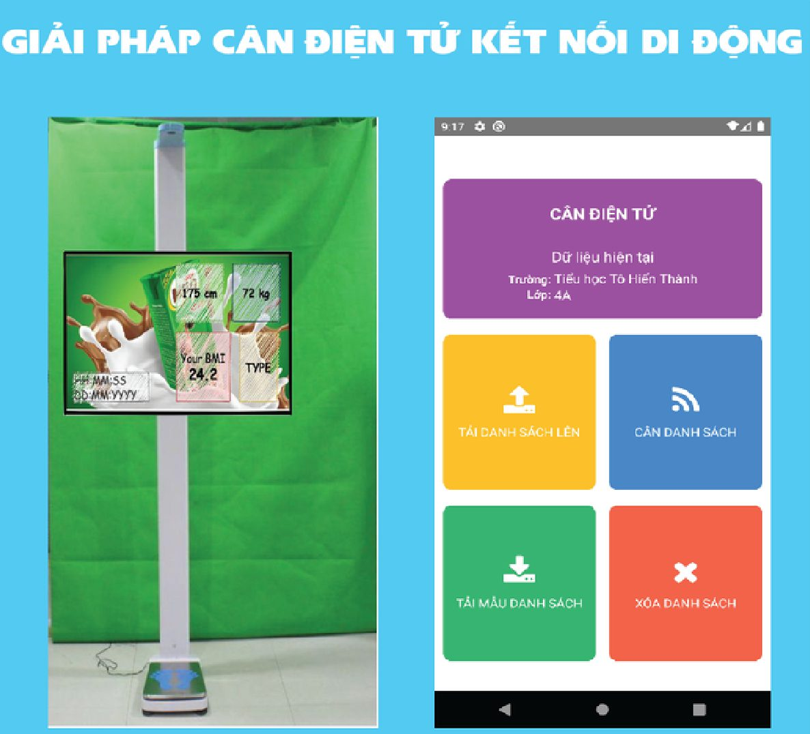
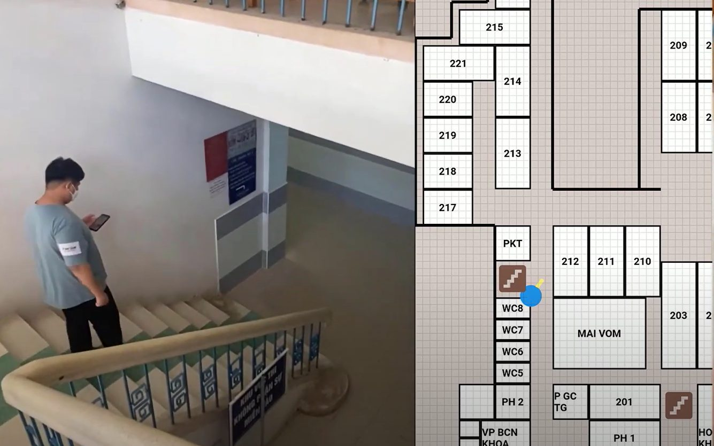
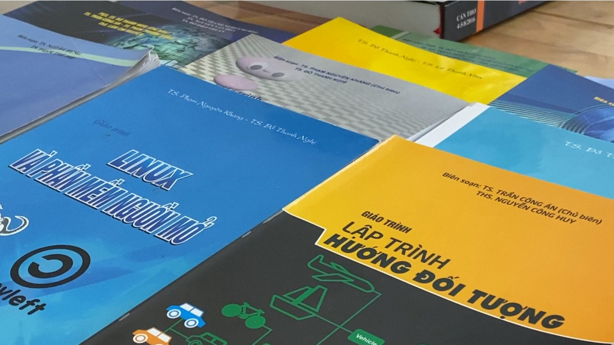
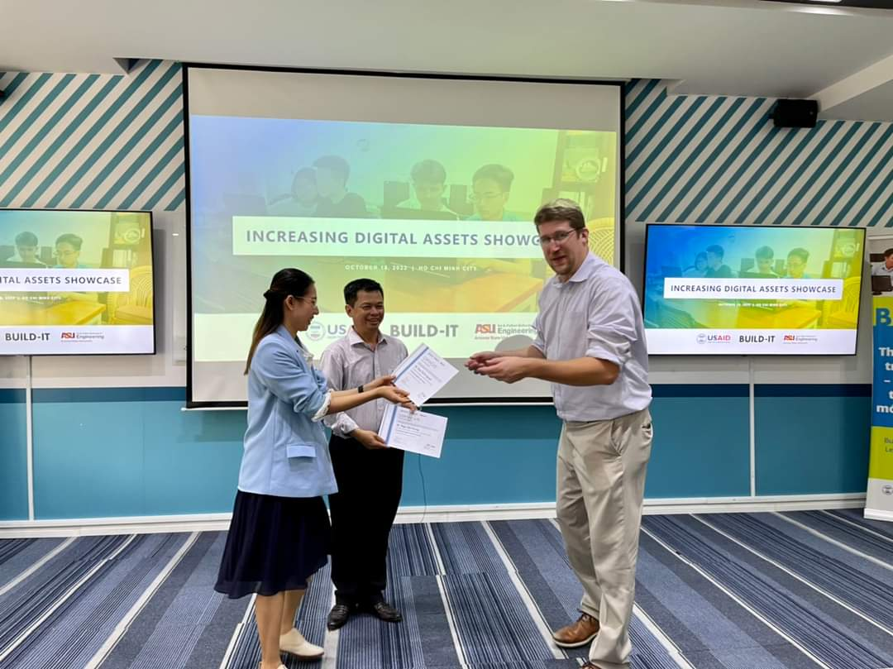
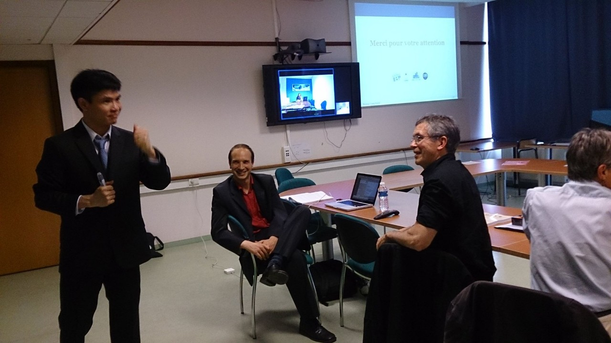

Nghiên cứu khoa học
131 công bố khoa học giai đoạn 2022–2026, 09 đề tài của giảng viên, 06 đề tài nghiên cứu của sinh viên, cùng hệ thống giáo trình và sản phẩm chuyển giao công nghệ.
Khoa tham gia tích cực vào hoạt động nghiên cứu khoa học, thu hút thành công các nguồn tài trợ nghiên cứu quan trọng cả trong và ngoài trường.
Giảng viên của Khoa đã có kinh nghiệm chủ trì, tham gia, tư vấn, thực hiện chính hoặc phản biện cho nhiều đề tài các cấp từ cấp cơ sở, cấp thành phố đến cấp Nhà nước, trong đó nhiều đề tài đã được ứng dụng vào thực tiễn. Giảng viên và sinh viên của Khoa cũng đóng góp cho nghiên cứu khoa học thông qua việc xuất bản rộng rãi các sách, chương sách, cũng như các bài báo/báo cáo khoa học đã được công bố trong các tạp chí, hội nghị uy tín thuộc danh mục ISI/Scopus và danh mục bài báo tính điểm công trình của HĐCDGSNN.
Nhóm nghiên cứu của Khoa
Khoa học dữ liệu, máy học, robot, Internet kết nối vạn vật
Trưởng nhóm: PGS. TS. GVCC. Đỗ Thanh Nghị
Dữ liệu lớn, tính toán hiệu năng cao, điện toán đám mây
Trưởng nhóm: PGS. TS. GVCC. Phan Thượng Cang
An toàn thông tin, an ninh mạng
Trưởng nhóm: TS. GVC. Trần Thị Tố Quyên
Mạng máy tính, Phần mềm tự do nguồn mở
Trưởng nhóm: TS. GVC. Ngô Bá Hùng
Số liệu tổng quan
Nguồn: Báo cáo kết quả hoạt động nghiên cứu khoa học của Khoa MMT & TT giai đoạn 2022–2026 và cơ sở dữ liệu công bố khoa học của Khoa. Số liệu năm 2026 tính đến tháng 8/2026, chưa trọn năm.
Công bố khoa học 2022 — 2026
Giai đoạn 2022–2026, giảng viên Khoa công bố 131 công trình khoa học, trong đó 101 công trình (77,1%) trên các diễn đàn quốc tế và 30 công trình trong nước. Số công bố tăng liên tục qua các năm trọn vẹn: 18 công trình năm 2022 lên 35 công trình năm 2025 — tăng 94,4% sau bốn năm, bình quân 29,3 công trình/năm. Riêng 8 tháng đầu năm 2026 đã có 14 công trình, trong đó 13 công trình quốc tế.
(*) Năm 2026 tính đến tháng 8/2026, chưa trọn năm.
Nơi công bố
Trong 70 công bố tại hội nghị quốc tế, 65 công bố (92,9%) thuộc các bộ kỷ yếu có phản biện của nhà xuất bản uy tín. 31 công bố tạp chí quốc tế phân bố trên 16 đầu tạp chí khác nhau.
Bộ kỷ yếu hội nghị quốc tế
| Bộ kỷ yếu hội nghị quốc tế | Số bài |
|---|---|
| Communications in Computer and Information Science (CCIS) | 41 |
| Lecture Notes in Networks and Systems (LNNS) | 13 |
| Lecture Notes in Computer Science (LNCS) | 7 |
| Procedia Computer Science | 2 |
| Lecture Notes in Electrical Engineering (LNEE) | 1 |
| Lecture Notes on Data Engineering and Communications Technologies | 1 |
Tạp chí quốc tế
| Tạp chí quốc tế | Số bài |
|---|---|
| SN Computer Science | 8 |
| Applied Sciences | 3 |
| Journal of Information and Communication Convergence Engineering | 3 |
| Current Medical Imaging | 2 |
| International Journal of Web Information Systems | 2 |
| Systems and Soft Computing | 2 |
| Vietnam Journal of Computer Science | 2 |
| Analytical Biochemistry | 1 |
| Canadian Journal of Learning and Technology | 1 |
| Computational Biology and Chemistry | 1 |
| European Spatial Data for Coastal and Marine Remote Sensing | 1 |
| Gene Expression Patterns | 1 |
| International Journal of Advances in Intelligent Informatics | 1 |
| International Journal of Information Technology | 1 |
| Internet of Things | 1 |
| Optimization Letters | 1 |
Tạp chí trong nước
| Tạp chí trong nước | Số bài |
|---|---|
| CTU Journal of Innovation and Sustainable Development | 3 |
| Tạp chí Khoa học Đại học Cần Thơ | 3 |
| Journal of Computer Science and Cybernetics | 1 |
| Khoa học Giáo dục Việt Nam | 1 |
| Thiết Bị Giáo Dục | 1 |
| Tra Vinh University Journal of Science | 1 |
| Tạp chí Khoa học và Công nghệ — Đại học Đà Nẵng (UD-JST) | 1 |
| Tạp chí Khoa học, Trường Đại học Trà Vinh | 1 |
| Tạp chí Thông tin và Truyền thông | 1 |
Hướng nghiên cứu và mức độ gắn kết với chương trình đào tạo
Hướng nghiên cứu về an toàn thông tin, mạng máy tính và hệ thống phân tán (52 lượt công bố) trực tiếp cấu thành nội hàm chuyên môn của ngành đào tạo — người học được giảng dạy và hướng dẫn bởi chính giảng viên đang nghiên cứu trong lĩnh vực đó. Các hướng còn lại cung cấp nguồn đề tài cho luận văn tốt nghiệp và đề tài nghiên cứu của sinh viên.
| Hướng nghiên cứu | Lượt công bố | Nội dung tiêu biểu |
|---|---|---|
| An toàn thông tin, mạng máy tính và hệ thống phân tán | 52 | Phát hiện xâm nhập và mã độc bằng học sâu; xử lý dữ liệu lớn trên Apache Spark; học liên kết; tối ưu phép kết (join); bộ nhớ đệm biên. |
| Trí tuệ nhân tạo trong y sinh và chẩn đoán hình ảnh y khoa | 52 | Phân lớp ảnh X-quang phổi, nhũ ảnh, ảnh CT/MRI; phân loại biểu hiện gen; AI giải thích được (XAI). |
| Ứng dụng AI trong nông nghiệp, môi trường và bảo tồn di sản | 27 | Dự báo năng suất lúa, khuyến nghị phân bón, phát hiện rác thải nhựa, mô hình hoá mạng lưới thoát nước, nhận dạng di sản văn hoá. |
| Xử lý ngôn ngữ tự nhiên, khai phá dữ liệu và hệ khuyến nghị | 25 | Tóm tắt văn bản tiếng Việt, phân tích quan điểm, ontology, sinh mô tả ảnh, hệ khuyến nghị có giải thích. |
| Công nghệ giáo dục và chuyển đổi số trong quản lý đào tạo | 17 | Công cụ soạn câu hỏi trắc nghiệm, nền tảng thực hành mạng máy tính, phân tích phản hồi người học, đánh giá chuẩn đầu ra. |
Một công bố có thể thuộc nhiều hướng nghiên cứu nên tổng số lượt lớn hơn 131.
Đề tài nghiên cứu của giảng viên
Giai đoạn 2021–2026, giảng viên của Khoa chủ nhiệm 09 đề tài các cấp: 01 đề tài cấp Bộ, 01 đề tài cấp Thành phố, 05 đề tài cấp cơ sở và 02 đề tài hợp tác với địa phương, doanh nghiệp.
| Tên đề tài | Năm | Cấp quản lý | Chủ nhiệm |
|---|---|---|---|
| Phân tích và so sánh hiệu năng các mô hình học sâu PU learning trong nhận diện mã độc | 2026 | Cơ sở | TS. Hà Duy An |
| Phát hiện tấn công mạng sử dụng các mô hình học sâu | 2026 | Cơ sở | TS. Triệu Thanh Ngoan |
| Phân tích và đánh giá các bộ lọc xác suất hiệu quả trong môi trường dữ liệu lớn | 2025 | Cơ sở | PGS. TS. Phan Thượng Cang |
| Nghiên cứu phát triển thuật toán máy học để chẩn đoán bệnh phổi từ ảnh X-quang và triệu chứng | 2025 | Bộ | PGS. TS. Đỗ Thanh Nghị |
| Nghiên cứu đề xuất thử nghiệm giải pháp chuyển đổi số đối với công tác đánh giá mức độ đạt chuẩn đầu ra một chương trình đào tạo trình độ đại học tại Trường CNTT & TT | 2024 | Cơ sở | TS. Ngô Bá Hùng |
| Tối ưu hoá join mờ trên tập dữ liệu lớn trong môi trường Spark | 2024 | Cơ sở | TS. Trần Thị Tố Quyên |
| Đánh giá trình độ và năng lực công nghệ sản xuất của doanh nghiệp và các ngành, lĩnh vực sản xuất trên địa bàn thành phố Cần Thơ | 2024 | Thành phố | TS. Ngô Bá Hùng |
| Nghiên cứu xây dựng giải pháp hỗ trợ giám sát cách ly tại nhà | 2022 | Hợp tác địa phương / doanh nghiệp | TS. Ngô Bá Hùng |
| Nghiên cứu xây dựng hệ thống thông minh hỗ trợ, hỏi đáp thủ tục hành chính tại thành phố Cần Thơ | 2021 | Hợp tác địa phương / doanh nghiệp | PGS. TS. Đỗ Thanh Nghị |
Đề tài nghiên cứu của sinh viên
Sinh viên ngành MMT & TTDL chủ trì và tham gia 06 đề tài nghiên cứu cấp Trường với 12 lượt sinh viên; 05 đề tài do giảng viên của Khoa hướng dẫn. Mỗi đề tài được cấp kinh phí 15.000.000 đồng, thực hiện trong 6 tháng. Sinh viên được sử dụng phòng thí nghiệm và dữ liệu của nhóm nghiên cứu.
| Tên đề tài | Năm | Sinh viên thực hiện | Số SV | Giảng viên hướng dẫn |
|---|---|---|---|---|
| Xây dựng ứng dụng nhận dạng các loại gạo qua hình ảnh trên thiết bị di động | 2024 | Trần Thanh Thiên (DI20T9A2) | 1 | TS. Nguyễn Thanh Hải |
| Hệ thống thu thập dữ liệu nhật ký hỗ trợ phát hiện xâm nhập của ransomware dựa trên phần mềm nguồn mở | 2024 | Bạch Toàn Mỹ (DI20T9A1) | 1 | — |
| Đề xuất giải pháp học sâu mờ để phát hiện tấn công mạng (TSV2026-130) | 2026 | Nguyễn Phú Bình, Nguyễn Thị Huỳnh Như, Hà Đức Anh (DI22T9A1) | 3 | PGS. TS. Phan Thượng Cang |
| Triển khai mô hình máy học và xây dựng ứng dụng di động khuyến nghị tối ưu hoá lượng phân bón NPK cho canh tác lúa Sóc Trăng | 2026 | Nguyễn Thành Tấn (DI22D2A1) | 1 | — |
| Công cụ phát hiện mã độc trong file hình ảnh (TSV2026-133) | 2026 | Thái Ngân Anh và 04 sinh viên lớp DI22D2A1 | 5 | PGS. TS. Phan Thượng Cang |
| Xây dựng ứng dụng hỗ trợ tư vấn cây lúa sử dụng mô hình máy học | 2026 | Nguyễn Đăng Khoa (DI22T9A1) | 1 | TS. Trương Minh Thái |
Hợp tác nghiên cứu
Trong 131 công bố, 09 công trình có đồng tác giả là nhà khoa học nước ngoài thuộc các cơ sở nghiên cứu tại Pháp (Université d’Artois, Université de Montpellier, Université de Lorraine), Ma-rốc và Hàn Quốc. Trong nước, Khoa hợp tác thường xuyên với Trường Đại học Sư phạm Kỹ thuật Vĩnh Long, Trường Đại học Trà Vinh, Trường Đại học Đồng Tháp, Học viện Công nghệ Bưu chính Viễn thông và các đơn vị trong Đại học Cần Thơ.
Đề tài NCKH và chuyển giao công nghệ
- Detection of the key courses affecting the learning outcomes of information technology students
- Research on building an intelligent system for automated answering the questions related to administrative procedures
- Tối ưu hóa Join đệ quy trên tập dữ liệu lớn trong môi trường MapReduce với Spark (2016)
- Nghiên cứu đề xuất thử nghiệm giải pháp chuyển đổi số đối với công tác đánh giá mức độ đạt chuẩn đầu ra một chương trình đào tạo trình độ đại học tại Trường Công nghệ Thông tin và Truyền thông
- Giải pháp cân điện tử kết nối di động
Giải pháp trục liên thông AG-ESB phục vụ xây dựng chính quyền điện tử (2020 — 2021)


Giải pháp hỗ trợ giám sát cách ly tại nhà dựa trên công nghệ Bluetooth (2021 — 2022)

Giải pháp cổng điểm danh không chạm dựa trên công nghệ UHF RFID


Ứng dụng dẫn đường trong nhà dựa trên công nghệ Bluetooth năng lượng thấp (BLE Indoor Navigation)

Các giáo trình đã xuất bản

- PGS. TS. Đỗ Thanh Nghị, PGS. TS. Phạm Nguyên Khang, Phạm Thế Phi, “Lập trình Python”, Giáo trình Khoa CNTT-TT, ĐHCT, 2019.
- TS. Phan Thượng Cang, TS. Ngô Bá Hùng, TS. Trần Thị Tố Quyên, “Giáo trình Phát triển ứng dụng hướng dịch vụ”, ĐHCT, 2019.
- TS. Trần Công Án, ThS. Nguyễn Hữu Vân Long, “Giáo trình Công nghệ J2EE”, ĐH Cần Thơ, 2019.
- TS. Trần Công Án, ThS. Nguyễn Công Huy, “Giáo trình Lập trình hướng đối tượng”, ĐHCT, 2016.
- TS. Ngô Bá Hùng, ThS. Đoàn Hòa Minh, “Lập trình cho thiết bị di động”, ĐH Cần Thơ, 2016.
- PGS. TS. Đỗ Thanh Nghị, TS. Trần Công Án, TS. Phan Thượng Cang, TS. Lâm Chí Nguyện, “Giáo trình lập trình Web”, NXB ĐHCT, 2015.
- PGS. TS. Phạm Nguyên Khang, PGS. TS. Đỗ Thanh Nghị, “Giáo trình kỹ thuật đồ họa”, NXB ĐHCT, 2015.
- PGS. TS. Đỗ Thanh Nghị, TS. Nguyễn Văn Hòa, TS. Đỗ Hiệp Thuận, “Lập trình song song”, NXB ĐH Cần Thơ, 2014.
- TS. Ngô Bá Hùng, ThS. Nguyễn Phú Trường, “Giáo trình các hệ thống phân tán”, NXB ĐHCT, 2012.
- PGS. TS. Đỗ Thanh Nghị, TS. Phạm Nguyên Khang, “Giáo trình nguyên lý máy học”, NXB ĐHCT, 2012.
- PGS. TS. Đỗ Thanh Nghị, TS. Lê Thanh Vân, “Giáo trình các hệ tri thức và khai thác dữ liệu”, NXB ĐHCT, 2012.
- PGS. TS. Đỗ Thanh Nghị, PGS. TS. Phạm Nguyên Khang, “Giáo trình Linux và phần mềm nguồn mở”, NXB ĐHCT, 2012.
- PGS. TS. Đỗ Thanh Nghị, “Khai mỏ dữ liệu: Minh họa bằng ngôn ngữ R”, NXB ĐHCT, 2011.
- ThS. Phạm Hữu Tài, “Giáo trình môn Giải quyết sự cố mạng”, Khoa CNTT, 2010.
- TS. Ngô Bá Hùng, “Giáo trình Thiết kế & cài đặt mạng”, NXB ĐHCT, 2003.
- TS. Ngô Bá Hùng, ThS. Nguyễn Công Huy, “Lập trình truyền thông”, ĐH Cần Thơ, 2000.

